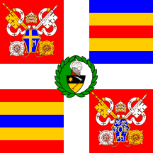
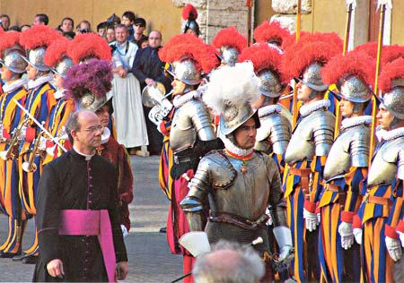
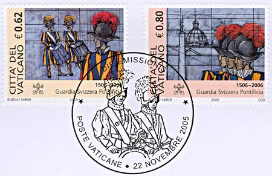
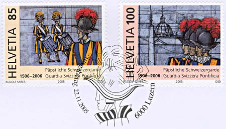
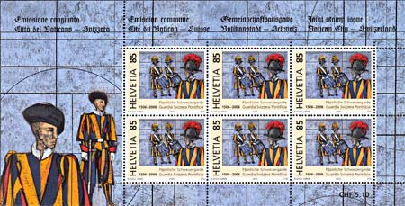
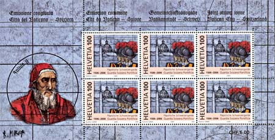
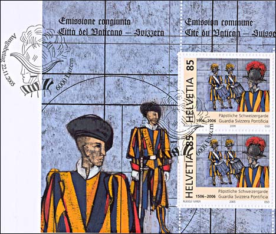
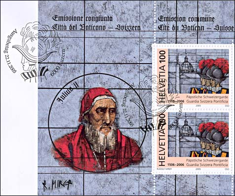
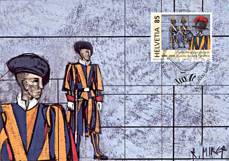
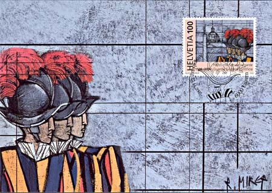

The Swiss Papal Guard 500 Anniversary
Joint Issue Vatican City - Switzerland 2005
From the time of the Middle Ages, Swiss pike men fought as mercenaries in the armies of many European states under treaties with the various Swiss cantons. Among the most famous of these were the Garde Suisse of the French monarchy. Swiss soldiers served the armies of the Papacy from the late 1300s onward, but only during the reign of Julius II (1503-13) was action taken to establish an organized unit of Swiss Guards directly under the Pope.

Swiss Guard Colors for John Paul II. 2002 - 2005
With the Arms of Guard Commandant, Colonel Elmar Theodor MäderIn 1505, pursuant to a treaty was signed between Pope Julius II and the cantons of Zurich and Lucerne, Julius requested that the two cantons send 200 soldiers to Rome under the command of Peter von Hertenstein as condottiere and Caspar von Silenen as captain. They arrived on January 21, 1506, and were taken into service with a papal blessing in St. Peter's Square.

That event is considered to be the date of establishment of the Vatican's corps of Swiss Guards, the "Cohors pedestris Helvetiorum a sacra custodia Pontificis."

This unit is the only modern survival of the Swiss mercenary tradition, as the Swiss Constitution of 1874 prohibits the enlistment of Swiss citizens in the forces of foreign powers with the exception of the Holy See, and are the last of a long tradition of a million mercenaries in the world's armies .

The pope's speech to the new recruits came on the day the Vatican honored the 147 Swiss Guards who lost their lives defending Pope Clement VII in the sack of Rome in 1527. Only 42 guards survived. On this anniversary the Vatican holds a swearing-in of all new guards to help remind them of the seriousness of their commitment. The sack of Rome marked the bloodiest day in Swiss Guard history. After that, no other combat deaths have been recorded.

Only unmarried Swiss males of the Catholic faith - historically, mainly from the four original Swiss cantons (Uri, Schwyz, Unterwalden, Luzern) and Valais - are eligible for service. Moreover, they must all be between 19 and 30 years of age, at least 174 cm tall and must have fulfilled their basic military training in the Swiss Army.

They are privately contracted for this special Foreign Service for at least two years. No official is openly involved in the process, but usually the discreet services of some parish priests are used.

Guard duty includes the bodyguard for the pontiff, the watch at the entrances to the city, the ceremonial honor guard, security at many religious and diplomatic functions, as well as information, surveillance, and similar service.

The commander of the Swiss Guard is always a colonel. He belongs to the "pontifical family," holding the rank of a "Chamberlain of His Holiness." The pope alone appoints the commander. At present, the colonel commands a lieutenant colonel, a guard chaplain, a major, a captain, a master sergeant, four sergeants, 10 corporals, 10 vice-corporals, and 70 halberdiers. This makes up the Guard of 100 men, although in 1971 this force had dwindled to only 40 members. By law the Guard can be composed of at most 100 volunteers; hence it is called Hundertschweizer (one hundred Swiss.)

Don't be fooled by their designer duds. When the Germans invaded Rome in 1944, the Swiss Guard stationed themselves in military grey uniform, behind machine guns and mortars just in case. Under those bright, baggy bloomers and a tilted beret stands a lean, mean fighting machine as well as a courteous helper of lost or curious tourists.

He also has completed rigorous entrance requirements and Swiss army training, making him a member of an elite guard who is ready at any moment to sacrifice his life for the pope. Sources: 1 , 2 .
The painter Rudolf Mirer was born in 1937. He took the decision to become an artist while he was serving as a Swiss Guard in Rome. The basic images were created by the artist specially for this stamps issue.
Stamps date of issue: 22.11.2005
Printing: offset 5-colors, Austrian State Printing Office, Vienna
Sizes. Stamps: 40 x 32.5 mm. Sheetlet: 195 x 100 mm.Note of the Swiss Postal Administration (after La loupe, Jan. 2006). For technical reasons the stamp designers have inversed the original artist's design of the guards on the miniature sheet 6 * 0.85 Fr and on the maximum card with the 0.85 Fr. value. The result leads to an unfortunate error: the guards wear the sword and the beret on the wrong side.